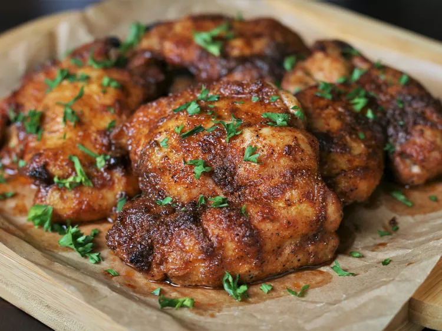

If you're looking for a "blank slate" this is it. These tasty baked chicken thighs can be used in hundreds of ways. Shred and stuff into a sandwich or pita. Serve alongside a big salad and some crusty bread. Or make a hearty dinner with mashed potatoes and gravy. The options are endless.